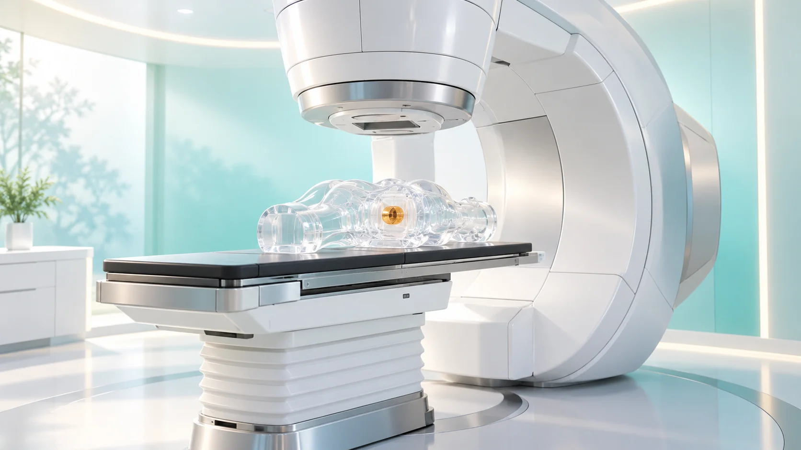
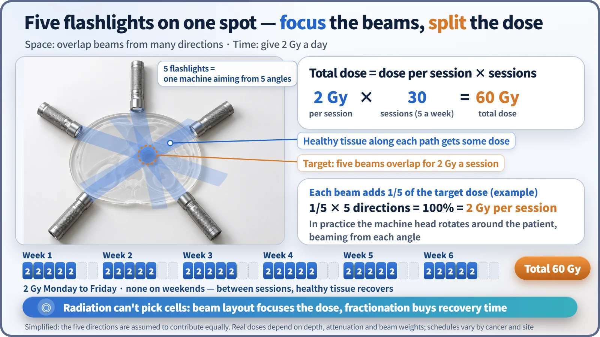
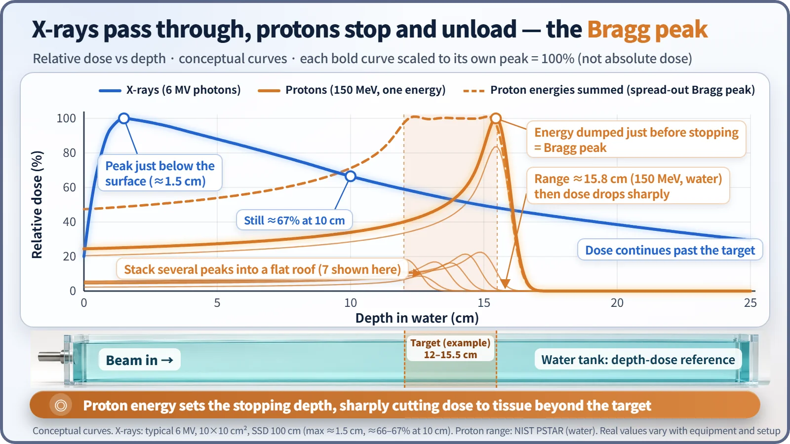

Society, Environment & the Future · 278
Five Flashlights on One Spot — How Radiation Therapy Takes Aim at Cancer
Radiation can't pick out cancer cells, so treatment aims through design: split doses in time, overlapping beams in space, and protons that stop at a chosen depth.

Radiation cannot tell a cancer cell from a healthy one, so radiation therapy aims by design. In time, the dose is split into sessions of about 2 Gy so healthy tissue can recover; in space, beams from many directions overlap on the tumor, or protons stop at a chosen depth in a Bragg peak; and sometimes the source is placed right beside the tumor.
We often hear that radiation can cause cancer. So isn't it a little odd that the very same radiation is one of the main weapons against cancer? The WHO and the IAEA estimate that more than half of all cancer patients need radiation therapy at some point in their treatment. Along with surgery and drug therapy, it is one of the three pillars of cancer care. [1]
There's one key to this apparent paradox. Radiation itself can't tell a cancer cell from a healthy one. So the aiming isn't done by the radiation; it's done by a human-designed plan in space and time. Let's take that plan apart piece by piece.
What radiation does to a cell: cutting DNA
When radiation passes through the body, it knocks electrons off atoms in the cells. This is called ionization. Chemical bonds break in the process, and the place that suffers most is DNA, which carries the genetic information. Radiation can hit DNA directly, but for X-rays about two-thirds of the damage is indirect: water molecules in the cell are split into highly reactive fragments (radicals), and those fragments attack the DNA. [2]
The deadliest damage is a double-strand break, where both strands of DNA are cut at once. A cell that can't repair it usually doesn't die on the spot. It dies later, when it tries to divide and fails.
This is where a difference appears. Healthy cells generally have well-equipped systems for checking and repairing damage. Many cancer cells, by contrast, have faulty repair systems and keep dividing without pause. Not every cancer cell is more sensitive to radiation than a healthy cell, of course. That's why treatment needs a strategy to widen this difference as much as possible.
Why not give it all at once: 2 Gy at a time
The first strategy is splitting the dose, called fractionation. A common schedule gives 1.8 to 2 Gy a day, five weekdays a week, over 4 to 8 weeks, for a total of 45 to 80 Gy. The Gy (gray) is the unit meaning 1 joule of energy absorbed per kilogram of tissue. For example, 2 Gy a day for 30 sessions adds up to 60 Gy over six weeks. [2]
Total dose = dose per session × number of sessions → 2 Gy × 30 = 60 Gy
Why bother splitting it? Think of strength training. Muscles hold up by recovering on rest days; cram a month of workouts into one day and you'll only get hurt. Healthy tissue repairs much of its damage in the day between sessions, while damage builds up more easily in cancer cells whose repair systems are broken. Today, schedules with larger doses per session and fewer sessions are also widely used, but the principle is the same: build in time for healthy tissue to recover. Note that the Gy used here is an absorbed dose concentrated on the tumor area, so it is not a number you can compare directly with the whole-body effective dose (mSv) used when talking about natural radiation.
Shine flashlights from many directions
The second strategy is about space. The most common machine is the medical linear accelerator. It accelerates electrons to nearly the speed of light and slams them into a metal target to produce high-energy X-rays (photons). Because the radiation comes from electricity rather than a radioactive material, it stops the instant the power is switched off.
The trouble is that a single X-ray beam doesn't pass through the tumor alone. It enters the body, crosses the tumor and keeps going through healthy tissue on the far side. In a dark room, one flashlight aimed at a wall gives only a soft glow. But point five flashlights at one spot from five directions, and that spot alone becomes dazzlingly bright. Radiation therapy works exactly this way. The machine head rotates around the patient and fires beams from several directions, while dozens of pairs of thin tungsten leaves shape each beam to the outline of the tumor. The prescribed dose builds up in the tumor where the beams overlap, and each beam's path receives only part of it.

Particles that unload where they stop: the Bragg peak
X-rays have one property that can't be changed. A typical 6 MV X-ray beam reaches its maximum dose a little below the surface, at about 1.5 cm deep, and then slowly declines with depth, still keeping about two-thirds of the maximum at 10 cm. The skin surface gets less than the maximum, but the beam keeps going well past the tumor. [3]
Protons are different. Heavy charged particles deposit more energy the more they slow down, then dump it all in a narrow zone just before they stop, and that's where they end. This sharp spike is the Bragg peak. The stopping depth is set by the energy: a 150 MeV proton travels about 15.8 cm in water. In actual treatment, beams of slightly different energies are stacked so the peak spreads out to cover the thickness of the tumor. [4]

Heavier ions such as carbon (heavy-ion therapy) have an even sharper peak and hit cells harder biologically. In South Korea, proton therapy is in operation, and heavy-ion therapy began in 2023. Still, these machines are not better for every cancer. The stopping depth can shift with the makeup of the body and the movement of organs, so precise management is needed, and they suit particular cancer types.
Firing from the inside: brachytherapy
The third method places the radiation source inside or right next to the tumor. This is called brachytherapy. Radiation falls off with the square of the distance, so it is intense right beside the source and weakens sharply just a few centimeters away. Typical examples are briefly inserting and then withdrawing an iridium-192 source, or permanently implanting iodine-125 "seeds" in the prostate. Some of these sources are made in nuclear reactors, which ties this story back to medical isotope production.
Does a treated person give off radiation?
It's a common question. External-beam treatments such as linear accelerators or protons do not make the body radioactive. The moment you leave the treatment room, there's no radiation. You feel no heat or pain during treatment, and each session takes from a few minutes to about fifteen. Only when a source stays in the body, as with permanently implanted seeds, are there precautions for a while, as advised by the medical team.
And neither "radiation is always dangerous" nor "radiation therapy has no side effects" is accurate. Lowering the dose to healthy tissue doesn't bring it to zero, so the medical team weighs the benefits and risks together when making the plan. Actual treatment choices must always be discussed with a specialist.
What takes aim is the design, not the radiation
To sum up, radiation therapy aims through three kinds of design. In time, it splits the dose into 2 Gy sessions so healthy cells get a chance to recover. In space, it focuses beams from many directions on one spot in the tumor, or uses the Bragg peak to set the stopping depth. And when needed, it puts the source right beside the tumor. The physics of ionization and dose that you meet in nuclear engineering turns, in the hospital, into the wisdom of five flashlights.